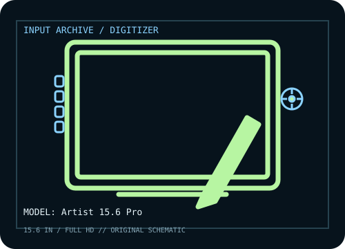

[ PEN TABLETS AND DIGITIZERS // IDENTIFIED COMPONENT ]
XP-Pen Artist 15.6 Pro
15.6-inch Full HD pen display with a red dial, eight shortcut keys, and PA2 passive stylus.

MODEL IDENTIFICATION: Manufacturer model / identifier: Artist 15.6 Pro. Confirm the unit label, bundle contents, regional suffix, and revision against its product documentation before compatibility or repair work.
Model specifications
| Catalog subcategory | Pen tablets and digitizers |
|---|---|
| Exact model / SKU | Artist 15.6 Pro |
| Active area | 344.16 × 193.59 mm (13.55 × 7.62 in) active display area. |
| Pressure and pen technology | 8,192 pressure levels; battery-free PA2 stylus with ±60° tilt. |
| Resolution / report rate | LCD: 1,920 × 1,080. XP-Pen lists 5,080 lpi pen resolution and ≥200 RPS report rate for this model. |
| Interface | Three-in-one lead provides HDMI video plus USB data/power; USB-C connection is available via supported connection options. HDMI and USB host connections are required for normal display use. |
| Driver, OS and compatibility | Windows 7 or later, macOS 10.10 or later, and listed Linux/Chrome OS versions; confirm driver and application support for the exact OS release. |
| Power | USB supplies tablet data and some power, with supplemental power connection as required by the host; PA2 pen is passive. Follow the included connection guide rather than relying on HDMI alone. |
| Calibration and service notes | Select the Artist 15.6 Pro display in XP-Pen driver and calibrate pen-to-screen alignment after setting native 1920 × 1080 resolution and display scaling. |
Preservation and service notes
USB supplies tablet data and some power, with supplemental power connection as required by the host; PA2 pen is passive. Follow the included connection guide rather than relying on HDMI alone. Select the Artist 15.6 Pro display in XP-Pen driver and calibrate pen-to-screen alignment after setting native 1920 × 1080 resolution and display scaling.
Record the as-found model label, accessories, host OS, driver/firmware version, calibration state, and test method. Published capability does not guarantee compatibility with a particular application or individual used unit.
Manufacturer sources
- Artist 15.6 Pro — XP-PenManufacturer product page for panel, active area, pen and controls.
- Downloads — XP-PenManufacturer driver and manual library; choose Artist 15.6 Pro (not V2) and the host OS.
Manufacturer product and support pages can change. Save the applicable manual/driver release notes and verify the exact model and revision at setup.